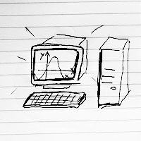
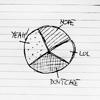
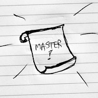

-

Liceum Ogólnokształcące
profil matematyczno-informatyczny
Mama chciała żebym była inżynierem, ja jednak w tamtych czasach chciałam zostać reżyserem lub fotografem. I zazwyczaj zamiast nad logarytmami siedziałam w kinie lub w ciemni. Moim największym licealnym osiągnięciem informatycznym było zrobienie animacji w Trubo Pascalu... jednak później się okazało, że można to robić o wiele lepiej i prościej :)
-
Kulturoznawstwo
Filmoznawstwo
MedioznawstwoUniwersytet Jagielloński
Na filmoznawstwie miałam poznać ludzi z którymi zrobimy wielkie dzieło fimowe, które wygra główną nagrodę na Festiwalu Sundance. Ludzi w prawdzie poznałam, ale bardziej zaczęły mnie interesować nowe media i technologie, społeczności internetowe i co dzęki nie można robić w świecie.
I tak już zostało.
Zainteresowania akademickie: media społecznościowe, reklama, cyberkultura, ruchy konktrukturowe, film współczesny -

Socjologia
Uniwersytet Jagielloński
Socjologia była próbą ucieczki od nadmiaru teorii na rzecz praktyki.
Zainteresowania akademickie: społeczności lokalne i ruchy społeczne, psychologia społeczna, metody jakościowe w badaniach, socjologia analityczna i badania rynku -

Medioznawstwo - magisterium
Uniwersytet Jagielloński
Uff... no i koniec. Pisanie pracy uświadomiło mi jedną rzecz: nie jestem teoretykiem, jestem praktykiem:) Żegnaj Faulcaulcie! Żegnaj Weberze!
Tytuł pracy magisterskiej: Kontrkultura 2.0? Jak nowe media wpływają na upcycling kontrkulturowych taktyk i idei. -

Lifelong learning
:)
Podobno współczesny człowiek oprócz jednego języka obcego powinien też znać jeden język programowania. Bardzo sobie wzięłam to to serca. Kursy i szkolenia:
✔ Microsoft: DEV203x Introduction to Bootstrap
✔ Codecademy: HTML & CSS
✔ Codecademy: Javascript (w trakcie)
✔ Codecademy: Make a website
✔ Nomad: Systemy zarządzania treścią (w trakcie)
✔ BerkeleyX: Academic and Business Writing
✔ MITx: 6.00.1x Introduction to Computer Science and Programming Using Python (w trakcie)
✔ W3Cx:Learn HTML5 from W3C (w trakcie)